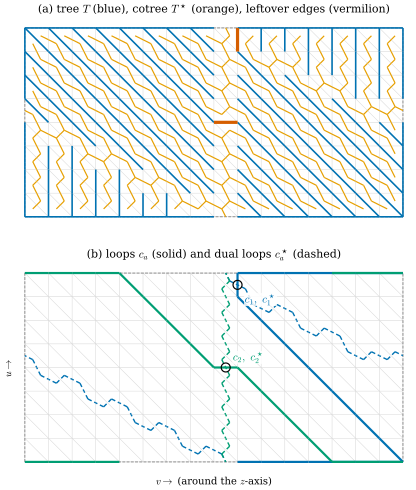
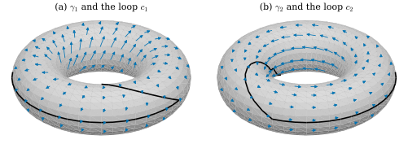

45.2 Homology Generators and Harmonic Bases
Goals
- 실수 계수 simplicial homology \(H_1 = \ker\partial_1/\im\partial_2\)를 정의하고, closed 1-form의 period로 두 loop가 homologous인지 판별할 수 있다.
- dual complex의 cycle이 primal의 closed 1-form과 같은 것임을, 곧 dual 쪽의 homology가 primal의 cohomology임을 증명할 수 있다.
- tree-cotree decomposition을 BFS 두 번으로 구현하고, 남는 edge가 정확히 \(2g\)개이며 각각이 homology generator를 하나씩 준다는 것을 증명할 수 있다.
- generator마다 closed 1-form을 만들어 그 harmonic 부분으로 \(\mathcal{H}\)의 basis를 얻고, 그 period와 Gram matrix를 계산할 수 있다.
Prerequisites
- Definition 36.2.1 (chain), Definition 36.2.4 (boundary operator), Proposition 36.2.9 (\(\partial_1 = d_0^{\mathsf T}\), \(\partial_2 = d_1^{\mathsf T}\)), Example 36.2.15 (boundary가 아닌 cycle)
- Lemma 36.4.12, Proposition 36.4.13
- Remark 36.5.1 (dual orientation), Proposition 36.5.5 (\(\tilde d_0 = d_1^{\mathsf T}\), \(\tilde d_1 = -d_0^{\mathsf T}\)), Definition 33.6.2 (dual complex)
- Theorem 45.1.16 (harmonic forms and cohomology)
- graph의 spanning tree: connected graph의 모든 vertex를 잇고 고리(cycle of a graph)가 없는 부분 graph. vertex가 \(N\)개이면 edge가 \(N - 1\)개이고, 두 vertex를 잇는 tree 안의 path는 하나뿐이다.
Motivation
Section 45.1은 harmonic 1-form의 공간 \(\mathcal{H}\)의 dimension이 \(2g\)임을 보였지만 그 basis를 주지는 않았다. basis가 있으면 harmonic 성분을 \(2g\)개의 수로 기록할 수 있고, Section 45.4에서 vector field를 설계할 때 곡면의 손잡이를 도는 방향의 회전을 그 수로 조절하게 된다. basis를 만들려면 closed이지만 exact가 아닌 1-form이 \(2g\)개 필요하다. torus의 \(du\), \(dv\)처럼 좌표에서 오는 form은 일반 mesh에는 없다. 대신 곡면의 손잡이를 감는 loop를 찾고, 그 loop를 가로지르는 edge에만 값을 주는 form을 만든다. 이 절은 그 loop를 찾는 가장 간단한 알고리즘인 tree-cotree decomposition과, 그것이 옳다는 증명을 다룬다.
Cycles, Boundaries, and Homology
Section 36.2는 boundary가 \(0\)인 chain을 cycle(순환), 어떤 chain의 boundary인 chain을 boundary(경계)라 부르고, 1-chain에서 \(Z_1 = \ker\partial_1\), \(B_1 = \im\partial_2\)로 썼다(Example 36.2.15의 앞). \(\partial_1\partial_2 = 0\)(Theorem 36.2.8)이므로 \(B_1 \subseteq Z_1\)이다. 남는 cycle이 곡면의 “구멍”을 감는 loop다.
Definition 45.2.1 (simplicial homology). 2-complex \(\mathcal{K}\)에 대하여 몫공간 \[ H_1(\mathcal{K}) := Z_1/B_1 = \ker\partial_1/\im\partial_2 \] 을 \(\mathcal{K}\)의 (실수 계수, 1차) simplicial homology(단체 호몰로지)라 한다. cycle \(c\)의 class를 \([c]\)로 쓰고, \([c] = [c']\), 곧 \(c - c'\)이 boundary이면 \(c\)와 \(c'\)이 homologous라 한다. \(H_0 = \ker\partial_0/\im\partial_1\)(\(\partial_0 = 0\)), \(H_2 = \ker\partial_2\)도 같은 방식으로 정한다.
대수적 위상수학의 표준 정의는 정수 계수다 [Hatcher02]. 이 장은 계산을 위해 Chapter 36처럼 실수 계수를 쓴다(Section 36.2의 Conventions 상자). 곡면 mesh에서 두 정의의 dimension(rank)은 같다. 실수 계수로 생기는 차이는 이 장의 범위 밖이다.
Proposition 45.2.2 (the dimension of the homology). face list의 2-complex에서 \(\dim H_1 = n_1 - \rank d_0 - \rank d_1\) \(= \dim(\ker d_1/\im d_0)\)이다. 특히 boundary가 없는 connected consistently oriented simplicial surface에서 \(\dim H_1 = 2 - \chi\)이다.
Proof. Proposition 36.2.9에서 \(\partial_1 = d_0^{\mathsf T}\), \(\partial_2 = d_1^{\mathsf T}\)이고, 행렬과 그 transpose는 rank가 같다. 따라서 \(\dim Z_1 = n_1 - \rank d_0\), \(\dim B_1 = \rank d_1\)이고 \(\dim H_1 = n_1 - \rank d_0 - \rank d_1\)이다. 이것은 Proposition 36.4.13의 식과 같고, 그 명제가 닫힌 경우의 값 \(2 - \chi\)를 준다.
Example 45.2.3 (homology of the running examples).
(a) icosphere: \(\chi = 2\)이므로 \(H_1 = 0\)이다. 모든 cycle이 어떤 face 모임의 boundary다. (b) Example 36.2.15의 annulus는 \(\chi = 0\)이고 boundary가 있어 \(\dim H_1 = n_1 - (n_0 - 1) - n_2 = 1\)이다(Remark 36.4.15의 \(b_1 = 1\)). 안쪽 원을 한 바퀴 도는 loop가 그 class를 대표한다. (c) torus_mesh와 flat torus는 \(\dim H_1 = 2\), genus2_mesh는 \(4\)이다. (d) 닫힌 mesh의 어느 vertex \(i\)에서든, \(i\)의 link를 한 바퀴 도는 loop는 \(i\)를 포함하는 face들(orientation 그대로)의 합의 boundary다. 그 face들이 공유하는 edge \(\{i, j\}\)는 반대 방향으로 두 번 나와 지워지기 때문이다. 따라서 link loop는 class \(0\)이다.
Definition 45.2.4 (homology generator). cycle \(c_1, \dots, c_m\)의 class \([c_1], \dots, [c_m]\)이 \(H_1(\mathcal{K})\)의 basis이면 \(c_1, \dots, c_m\)을 homology generator(호몰로지 생성원)라 한다. 곧 서로 homologous가 아니고 어떤 linear combination도 boundary가 아니며(\(\sum z_ac_a \in B_1 \Rightarrow z = 0\)), 모든 cycle이 그 linear combination과 boundary의 합으로 쓰이는 loop들이다.
loop가 generator인지 확인하려면 boundary가 아님을 보여야 하는데, 2-chain을 모두 시험할 수는 없다. closed 1-form이 그 일을 대신한다. 1-form \(\omega\)와 1-chain \(c\)에 대해 \(c^{\mathsf T}\omega = \langle\omega, c\rangle\)는 \(c\)를 따른 \(\omega\)의 적분이다(Proposition 36.2.13). cycle 위의 이 적분을 \(\omega\)의 period(주기)라 부르자.
Lemma 45.2.5 (periods of closed forms see only homology). (a) closed 1-form \(\omega\)(\(d_1\omega = 0\))의 period는 boundary에서 \(0\)이다. 따라서 homologous인 두 cycle에서 같다. (b) exact 1-form의 period는 모든 cycle에서 \(0\)이다. (c) cycle \(c_1, \dots, c_m\)과 closed 1-form \(\omega_1, \dots, \omega_m\)의 period matrix(주기 행렬) \((c_b^{\mathsf T}\omega_a)_{ab}\)가 invertible이면 \([c_1], \dots, [c_m]\)은 linearly independent이다.
Proof. (a) \(c = \partial_2s = d_1^{\mathsf T}s\)이면 \(c^{\mathsf T}\omega = s^{\mathsf T}d_1\omega = 0\)이다. 이것이 discrete Stokes's theorem이다(Definition 36.2.14). (b) \(\partial_1c = d_0^{\mathsf T}c = 0\)이면 \(c^{\mathsf T}d_0\alpha = (d_0^{\mathsf T}c)^{\mathsf T}\alpha = 0\)이다. (c) \(\sum_bz_bc_b \in B_1\)이면 (a)에서 모든 \(a\)에 대해 \(\sum_bz_b\,c_b^{\mathsf T}\omega_a = 0\)이고, 행렬이 invertible이므로 \(z = 0\)이다.
Example 45.2.6 (meridian and longitude).
torus_mesh(2, 0.8, nu, nv)에서 \(j = 0\)인 vertex들을 \(u\)가 늘어나는 쪽으로 잇는 loop \(c_u\)(meridian, tube를 한 바퀴)와 \(i = 0\)인 vertex들을 \(v\)가 늘어나는 쪽으로 잇는 loop \(c_v\)(바깥 적도)를 보자. closed 1-form \(R_1(du)\), \(R_1(dv)\)(Example 45.1.17)의 period matrix는 \(\begin{pmatrix}2\pi & 0\\ 0 & 2\pi\end{pmatrix}\)이다. Lemma 45.2.5(c)로 \([c_u], [c_v]\)는 independent이고, \(\dim H_1 = 2\)이므로 \(c_u, c_v\)는 homology generator다.
Verification: verify/v-45-2-homology-harmonic-bases.py
Non-example 45.2.7 (two meridians). 같은 mesh에서 \(j = 0\)의 meridian \(c_u\)와 \(j = 5\)의 meridian \(c_u'\)은 둘 다 boundary가 아닌 cycle이지만 generator의 쌍이 아니다. 둘 사이의 띠(\(0 \le j \lt 5\)인 사각형의 face 전부)를 2-chain \(s\)로 두면 \(\partial_2s = \pm(c_u' - c_u)\)이다. 띠 안쪽의 edge는 반대 방향으로 두 번 나와 지워지기 때문이다. 그래서 \([c_u] = [c_u']\)이고, 두 loop의 period matrix의 행이 같아(\(R_1(du)\)에서 \(2\pi\), \(R_1(dv)\)에서 \(0\)) Lemma 45.2.5(c)의 판정도 실패한다.
Verification: verify/v-45-2-homology-harmonic-bases.py
Dual Loops
dual complex(Definition 33.6.2)에도 chain이 있다. dual 1-chain은 dual edge의 계수 있는 합이고, edge 번호로 저장하면 \(\R^{n_1}\)의 vector \(c^\star\)이다. 계수 \(+1\)은 dual edge \(e^\star\)를 Remark 36.5.1의 방향, 곧 \(e = [i, j]\)의 오른쪽 face에서 왼쪽 face로 지나간다는 뜻이다. dual 0-chain은 face마다, dual 2-chain은 vertex마다(dual cell \(i^\star\)) 수 하나다. primal 1-chain \(c\)와 dual 1-chain \(c^\star\)에 대해 \[ c^\star\cdot c := \sum_e c^\star_e\,c_e \] 를 둘의 intersection number(교차수)라 하자. primal loop가 edge \(e\)를 지나는 곳에서 dual loop가 \(e\)를 가로지르면 \(\pm1\)을 센다.
Proposition 45.2.8 (dual cycles are closed forms). boundary가 없는 consistently oriented mesh의 dual complex에서 boundary operator는 \(\tilde\partial_1 = d_1\)(dual 1-chain \(\to\) dual 0-chain), \(\tilde\partial_2 = -d_0\)(dual 2-chain \(\to\) dual 1-chain)이다. 따라서 dual 1-cycle은 \(\ker d_1\)의 원소, 곧 primal 1-form으로 읽으면 closed form이고, dual boundary는 \(\im d_0\), 곧 exact form이다. dual complex의 homology는 \[ \tilde H_1 = \ker d_1/\im d_0, \] 곧 Theorem 45.1.16의 cohomology와 같은 공간이다.
Proof. coboundary는 boundary의 dual map이므로(Definition 36.2.14) 같은 번호 매김에서 그 행렬은 boundary operator의 행렬의 transpose다. dual complex의 coboundary, 곧 dual exterior derivative는 \(\tilde d_0 = d_1^{\mathsf T}\), \(\tilde d_1 = -d_0^{\mathsf T}\)이다(Proposition 36.5.5). 따라서 \(\tilde\partial_1 = \tilde d_0^{\mathsf T} = d_1\), \(\tilde\partial_2 = \tilde d_1^{\mathsf T} = -d_0\)이다. 나머지는 정의를 읽은 것이다.
예를 들어 vertex \(i\)의 dual cell의 boundary는 dual 1-chain \(-d_0e_i\)이다. edge \([i, j]\)(\(i \lt j\))에서 계수가 \(+1\)이고 \([j, i]\)(\(j \lt i\))에서 \(-1\)이므로, \(i\) 둘레의 dual edge를 face의 방향(반시계)으로 한 바퀴 돈다. 같은 vector를 primal 1-form으로 읽으면 \(d_0\)의 \(i\)번 열의 \(-1\)배, 곧 exact form \(d_0(-e_i)\)이다. Crane은 이 장의 첫머리에서 homology와 cohomology가 discrete에서는 “행렬 transpose 하나만큼만” 다르다고 적는다 [Cr ch8]. Proposition 45.2.8이 그 말의 정확한 판이다. primal의 \(H_1 = \ker d_0^{\mathsf T}/\im d_1^{\mathsf T}\)와 dual의 \(\tilde H_1 = \ker d_1/\im d_0\)은 같은 \(\R^{n_1}\) 안에서 \(d\)와 \(d^{\mathsf T}\)의 역할을 바꾼 것이다. \(k\)차원 조각과 \((2-k)\)차원 조각의 짝짓기(Poincaré duality, Section 33.6)가 homology에서 이렇게 나타난다.
The Tree-Cotree Decomposition
generator를 찾는 알고리즘은 spanning tree 둘만 쓴다 [Eppstein03]. mesh의 vertex와 edge는 graph이고, face와 dual edge도 graph(dual graph)다. dual edge \(e^\star\)가 primal edge \(e\)를 가로지른다고 말하자.
Definition 45.2.9 (tree-cotree decomposition). boundary가 없는 connected mesh에서 (1) primal graph의 spanning tree \(T\)를 고르고, (2) \(T\)의 edge를 가로지르지 않는 dual edge만으로 dual graph의 spanning tree \(T^\star\)를 고른다. 그러면 edge 전체가 \(T\), \(\{e : e^\star \in T^\star\}\), 그리고 나머지 \(R\)로 나뉜다. 이 세 조각 \((T, T^\star, R)\)을 tree-cotree decomposition(트리-코트리 분해)이라 하고, \(T^\star\)를 cotree(코트리)라 한다. \(e \in R\)마다 \(T \cup \{e\}\) 안의 유일한 고리를 \(c_e\)(primal loop, \(e\)를 \(i \to j\) 방향으로 지나게 orient한다), \(T^\star\cup\{e^\star\}\) 안의 유일한 dual 고리를 \(c^\star_e\)(dual loop, \(e^\star\)를 그 방향으로 지나게 orient한다)라 하자.
단계 (2)의 tree가 언제나 있는지가 첫째 질문이다. 다음 lemma가 그 증명의 열쇠다.
Lemma 45.2.10 (a tree carries no nonzero cycle). 1-chain \(c\)의 계수가 \(0\)이 아닌 edge들이 모두 한 tree(더 일반적으로 고리가 없는 graph)에 속하고 \(\partial_1c = 0\)이면 \(c = 0\)이다.
Proof. \(c \ne 0\)이라 하자. 계수가 \(0\)이 아닌 edge들이 이루는 graph \(G\)는 비어 있지 않고 고리가 없다. \(G\)에서 가장 긴 path의 한 끝 vertex \(v\)는 \(G\)의 edge 하나에만 속한다. 다른 edge에도 속한다면 path를 늘이거나(새 vertex로 갈 때) 고리를 만들 수(path 위의 vertex로 돌아올 때) 있기 때문이다. 그 edge를 \(e\)라 하면 \((\partial_1c)_v = \pm c_e \ne 0\)이다. 모순이다.
Theorem 45.2.11 (tree-cotree generators). boundary가 없는 connected consistently oriented simplicial surface에서 다음이 성립한다. (a) 단계 (2)의 spanning tree \(T^\star\)가 언제나 있다. \(\abs{T} = n_0 - 1\), \(\abs{T^\star} = n_2 - 1\)이고 \[ \abs{R} = n_1 - (n_0 - 1) - (n_2 - 1) = 2 - \chi \] 이다. surface의 genus가 \(g\)이면 \(\abs R = 2g\)이다. (b) \(a, b \in R\)에 대해 \(c^\star_a\cdot c_b = 1\)(\(a = b\)), \(0\)(\(a \ne b\))이다. (c) \(\{[c_e]\}_{e\in R}\)는 \(H_1\)의 basis이고 \(\{[c^\star_e]\}_{e\in R}\)는 \(\tilde H_1 = \ker d_1/\im d_0\)의 basis다. 특히 primal loop \(c_e\)들은 homology generator다.
Proof idea: \(T\)와 \(T^\star\)는 서로 가로지르지 않으므로, 남는 edge 하나가 만드는 primal loop와 dual loop는 그 edge에서만 만난다. 이 “대각” 교차가 Lemma 45.2.5(c)의 invertible matrix가 된다.
Proof. (a) 남은 dual graph, 곧 \(T\)에 속하지 않는 edge의 dual edge만 쓴 graph가 connected임을 보이면 된다. 그렇지 않다고 하자. 그러면 face가 공집합이 아닌 두 모임 \(A\), \(B\)로 나뉘고, \(A\)의 face와 \(B\)의 face가 공유하는 edge는 모두 \(T\)에 속한다. 2-chain \(s := \sum_{f\in A}f\)의 boundary에서 두 face가 모두 \(A\)에 있는 edge는 consistent orientation 때문에 반대 부호로 두 번 나와 지워진다. 그러므로 \(\partial_2s\)의 계수가 \(0\)이 아닌 edge는 \(A\)와 \(B\) 사이의 edge뿐이고, 모두 \(T\)에 있다. \(\partial_1\partial_2s = 0\)이므로 Lemma 45.2.10에서 \(\partial_2s = 0\)이다. 그런데 \(\ker\partial_2 = \ker d_1^{\mathsf T} = \Span\{\mathbf{1}\}\)(Lemma 36.4.12(b))이고, \(s\)는 \(A\)의 face에서 \(1\), \(B\)의 face에서 \(0\)이라 \(\mathbf{1}\)의 상수배가 아니다. 모순이다. spanning tree의 edge 수는 vertex 수보다 하나 적으므로 \(\abs T = n_0 - 1\), \(\abs{T^\star} = n_2 - 1\)이고, \(\abs R\)은 나머지다. \(2 - \chi = 2g\)는 Theorem 40.2.1의 진술의 관계다. (b) edge의 집합으로 보면 \(c_b\)는 \(T \cup \{b\}\) 안에, \(c^\star_a\)는 \(\{e : e^\star\in T^\star\}\cup\{a\}\) 안에 있다. \(T\)와 \(T^\star\)는 정의에서 가로지르지 않고, \(a, b \in R\)이라 \(a \notin T\), \(b^\star \notin T^\star\)이다. 따라서 두 support의 공통 부분은 \(\{a\}\cap\{b\}\)에 들어 있다. \(a \ne b\)이면 \(c^\star_a\cdot c_b = 0\)이고, \(a = b\)이면 그 edge에서 두 계수가 orientation의 정의에 의해 모두 \(+1\)이므로 \(1\)이다. (c) Proposition 45.2.8에서 \(c^\star_a \in \ker d_1\)이다. 곧 \(\omega_a := c^\star_a\)를 primal 1-form으로 읽으면 closed이고, (b)에서 \(c_b^{\mathsf T}\omega_a = c^\star_a\cdot c_b\)이므로 period matrix가 identity다. Lemma 45.2.5(c)로 \([c_e]\)들은 independent이고, 개수 \(2 - \chi\)가 \(\dim H_1\)(Proposition 45.2.2)과 같으므로 basis다. dual 쪽도 같다. \(\sum_az_ac^\star_a = d_0y\)(dual boundary)이면 \(c_b\)와의 intersection number를 취해 \(z_b = c_b^{\mathsf T}d_0y = (d_0^{\mathsf T}c_b)^{\mathsf T}y = 0\)이고, \(\dim\tilde H_1 = 2 - \chi\)(Proposition 36.4.13)이다.
Crane의 노트는 단계를 반대 순서(먼저 \(T^\star\), 그다음 \(T^\star\)를 가로지르지 않는 \(T\))로 적고 dual loop를 generator로 쓴다 [Cr §8.2.1]. [Crane10]은 이 절과 같은 순서다. 위의 증명은 primal과 dual의 역할을 바꾸어도 그대로이므로(Exercise 45.2.4) 두 순서 모두 같은 결론을 준다. Section 45.4는 dual loop의 holonomy를 쓰므로 이 절은 두 종류의 loop를 모두 기록한다.

dgmesh.torus_mesh(2, 0.8, 8, 16)(vertex 128, edge 384, face 256)을 \((v, u)\) 직사각형에 펼친 것. vertex \((i, j)\)를 \((j, i)\)에 그렸다. 왼쪽과 오른쪽 변, 아래와 위 변은 붙어 있으므로 그 위의 edge는 두 번 그려진다. BFS의 root는 vertex 0과 face 0이다. 읽는 법: (a) 파랑이 primal spanning tree \(T\)(edge 127개), 주황이 cotree \(T^\star\)(dual edge 255개, face 무게중심에서 edge 중점을 지나 이웃 face로), 굵은 주홍이 남는 edge 둘, 연회색이 나머지 edge다. (b) 파랑과 초록 실선이 primal loop \(c_1\), \(c_2\), 같은 색 점선이 dual loop \(c_1^\star\), \(c_2^\star\), 검은 원이 남는 edge다. 볼 것: (a)에서 주황 tree는 파란 edge를 한 번도 가로지르지 않는다. (b)에서 같은 색의 실선과 점선은 검은 원에서 한 번만 만나고, 다른 색끼리는 만나지 않는다(\(c^\star_a\cdot c_b = \delta_{ab}\)). \(c_1\)은 tube를 감는 loop이고(\(du\)의 period \(-2\pi\), \(dv\)의 period \(0\)), \(c_2\)는 tube와 \(z\)축을 한 번씩 감는다(\(-2\pi\), \(2\pi\)). 본문과의 연결: Definition 45.2.9, Theorem 45.2.11.Figure 45.2.1의 (a)에서 파란 tree는 BFS의 모양을 그대로 보여 준다. root인 왼쪽 아래 vertex에서 대각선 방향으로 퍼져 나간다. 주황 tree는 파란 선 사이의 빈틈으로만 다니며 모든 face를 잇는다. 둘 다 쓰지 않은 edge가 주홍 두 개다. (b)로 가면, 위쪽 검은 원의 주홍 edge에 파란 primal loop \(c_1\)을 이으면 직사각형을 위아래로 지나는 loop가 되고, 같은 edge의 dual 쪽에 주황 tree의 path를 이으면 좌우로 지나는 파란 점선 \(c_1^\star\)가 된다. 둘은 그 원에서만 만난다. 초록 쌍도 같다. 파란 점선이 초록 실선과 만나지 않는다는 것이 (b)의 핵심이다.
Example 45.2.12 (counting leftover edges).
Implementation 상자의 출력처럼 icosphere(2)에서는 남는 edge가 없고(\(480 - 161 - 319 = 0\)), torus_mesh(2, 0.8, 12, 24)에서는 \(864 - 287 - 575 = 2\), genus2_mesh(0.2)에서는 \(7578 - 2523 - 5051 = 4\)이다. icosphere에서 \(T\)를 정하면 cotree가 남은 edge를 모두 쓴다. sphere의 모든 loop는 boundary이기 때문이다. Figure 45.2.1의 mesh에서 primal loop의 \((du, dv)\) period는 \(c_1\)에서 \((-2\pi, 0)\), \(c_2\)에서 \((-2\pi, 2\pi)\)이다. Example 45.2.6의 \(c_u, c_v\)와 다르지만, 행렬 \(\begin{pmatrix}-1 & 0\\ -1 & 1\end{pmatrix}\)이 invertible이므로 같은 \(H_1\)의 다른 basis다. 어떤 generator가 나오는지는 root와 BFS 순서에 달려 있다.
Verification: verify/v-45-2-homology-harmonic-bases.py
Harmonic Bases
Theorem 45.2.11(c)의 증명에서 이미 closed 1-form \(\omega_a = c^\star_a\)가 나왔다. 이것은 dual loop \(c^\star_a\)가 가로지르는 edge에만 \(\pm1\)이고 나머지에서 \(0\)인 1-form이다. 부호는 dual loop가 그 edge를 오른쪽 face에서 왼쪽 face로 가로지르면 \(+1\)이다. face마다 dual loop가 들어오는 edge와 나가는 edge가 하나씩이고 둘레를 돌며 더하면 \(+1 - 1 = 0\)이라 closed다(Proposition 45.2.8). Crane은 generator의 왼쪽에서 오른쪽으로 건너는 edge에 \(+1\), 반대로 건너는 edge에 \(-1\)을 주는 1-form으로 같은 것을 만든다 [Cr §8.2.2]. 여기서는 그 부호를 dual chain의 orientation이 정한다. Section 45.1이 closed form에서 exact 부분을 빼는 법을 주었으므로 남은 일은 Poisson solve뿐이다.
Definition 45.2.13 (harmonic basis). tree-cotree decomposition의 dual loop \(c^\star_1, \dots, c^\star_{2g}\)에 대하여 closed 1-form \(\omega_a := c^\star_a\)의 harmonic 부분 \[ \gamma_a := \omega_a - d_0\alpha_a, \qquad d_0^{\mathsf T}\star_1d_0\,\alpha_a = d_0^{\mathsf T}\star_1\omega_a \] (Theorem 45.1.16(a))을 모은 \(\gamma_1, \dots, \gamma_{2g}\)를 그 decomposition의 harmonic basis(조화 기저)라 한다.
예: icosphere에는 dual loop가 없으므로 harmonic basis는 빈 모임이고, \(\mathcal{H} = 0\)과 맞는다. 비예: dual loop 대신 dual cell의 boundary \(-d_0e_i\)(Proposition 45.2.8 뒤의 예)를 1-form으로 읽으면 exact이므로 harmonic 부분이 \(0\)이다. dual boundary인 dual cycle에서는 basis를 만들 수 없고, tree-cotree의 dual loop처럼 \(\tilde H_1\)의 basis를 이루는 dual cycle이 필요하다.
Proposition 45.2.14 (the harmonic basis is a basis). Theorem 45.2.11의 가정에서 (a) \(c_b^{\mathsf T}\gamma_a = \delta_{ab}\)이다. 곧 primal loop 위의 period matrix가 identity다. (b) \(\gamma_1, \dots, \gamma_{2g}\)는 \(\mathcal{H}\)의 basis다. (c) \(\star_1\)의 모든 성분이 양수이면 \(P_{ab} := (c^\star_a)^{\mathsf T}\star_1\gamma_b\)는 Gram matrix \(\langle\gamma_a, \gamma_b\rangle_1\)과 같고 symmetric positive definite이다.
Proof. (a) Lemma 45.2.5(b)에서 \(c_b^{\mathsf T}d_0\alpha_a = 0\)이므로 \(c_b^{\mathsf T}\gamma_a = c_b^{\mathsf T}\omega_a = c^\star_a\cdot c_b = \delta_{ab}\)(Theorem 45.2.11(b)). (b) \(\sum_az_a\gamma_a = 0\)이면 \(c_b\)와의 period를 취해 \(z_b = 0\)이다. 따라서 independent이고, 개수 \(2g\)가 \(\dim\mathcal{H}\)(Theorem 45.1.16(a))와 같으므로 basis다. (c) \(\omega_a = \gamma_a + d_0\alpha_a\)이고 \(\langle d_0\alpha_a, \gamma_b\rangle_1 = \alpha_a^{\mathsf T}d_0^{\mathsf T}\star_1\gamma_b = 0\)(\(\gamma_b \in \mathcal{H}\))이므로 \(P_{ab} = \omega_a^{\mathsf T}\star_1\gamma_b = \langle\gamma_a, \gamma_b\rangle_1\)이다. inner product에 대한 basis의 Gram matrix는 symmetric이고, \(z \ne 0\)이면 \(z^{\mathsf T}Pz = \langle\sum z_a\gamma_a, \sum z_a\gamma_a\rangle_1 \gt 0\)이다.
(c)의 \(P_{ab}\)는 dual 1-form \(\star_1\gamma_b\)를 dual loop \(c^\star_a\)를 따라 적분한 값이다. Crane이 period matrix라 부르는 것이 이것이고 [Cr §8.4.1], Section 45.4에서 vector field의 harmonic 성분을 정할 때 쓴다. \(2g\)개의 \(\alpha_a\)는 같은 행렬 \(-L\)로 구하므로, 한 번 factorization하면 나머지는 triangular solve뿐이다(Remark 42.6.3). lib/ch45.py의 harmonic_basis가 그렇게 한다.
Example 45.2.15 (the harmonic basis of the torus mesh).
torus_mesh(2, 0.8, 24, 48)에서 BFS(root vertex 0, face 0)의 generator는 Figure 45.2.1과 같은 종류다: \(c_1\)의 \((du, dv)\) period가 \((-2\pi, 0)\), \(c_2\)가 \((-2\pi, 2\pi)\)이다. harmonic basis는 Example 45.1.17의 \(\hat\gamma_{du}\), \(\hat\gamma_{dv}\)(각각 \(R_1(du)\), \(R_1(dv)\)의 harmonic 부분)로 \(\gamma_1 = -\tfrac{1}{2\pi}(\hat\gamma_{du} + \hat\gamma_{dv})\), \(\gamma_2 = \tfrac{1}{2\pi}\hat\gamma_{dv}\)이다(\(10^{-12}\) 안에서). period가 \(\delta_{ab}\)라는 조건만으로 계수가 정해지기 때문이다. Gram matrix는 \(\begin{pmatrix}2.7382 & -0.4359\\ -0.4359 & 0.4359\end{pmatrix}\)이다. smooth 값은 (45.1.1)의 \(\gamma_{du}\)와 \(dv\)가 L2-orthogonal이고 \(\norm{\gamma_{du}}^2 = 4\pi^2c/r\), \(\norm{dv}^2 = 4\pi^2r/c\)(\(c = \sqrt{R^2 - r^2}\))이므로 \(\begin{pmatrix}c/r + r/c & -r/c\\ -r/c & r/c\end{pmatrix}\) \(= \begin{pmatrix}2.7277 & -0.4364\\ -0.4364 & 0.4364\end{pmatrix}\)이다.
Verification: verify/v-45-2-homology-harmonic-bases.py

dgmesh.torus_mesh(2, 0.8, 24, 48)의 harmonic basis \(\gamma_1, \gamma_2\)(Definition 45.2.13, Example 45.2.15). 읽는 법: 각 패널의 검은 선은 primal loop \(c_a\) 가운데 보이는 부분, 파란 화살표는 \(\gamma_a^\sharp\)(face 무게중심의 Whitney interpolant)이고, 길이는 (a)에서 실제의 \(1.5\)배, \(\gamma_2\)가 작은 (b)에서 \(4\)배다. 화살표는 \(i, j\)가 짝수인 사각형의 앞쪽 face에만 그렸다. 볼 것: (b)의 \(\gamma_2 = \hat\gamma_{dv}/2\pi\)는 \(z\)축을 도는 방향(longitude)으로만 흐르고, 바깥쪽에서 더 짧다(크기 \(1/(2\pi(R + r\cos u))\)). (a)의 \(\gamma_1\)은 tube를 감는 성분이 크고(바깥쪽에서 아래로, 구멍 쪽에서 위로 향한다), 같은 크기의 longitude 성분이 더해져 조금 기울어 있다. 각 \(\gamma_a\)는 자기 loop \(c_a\)를 따라 적분하면 \(1\), 다른 loop를 따라 적분하면 \(0\)이다. 본문과의 연결: Proposition 45.2.14, Example 45.2.15. 두 field를 함께 돌려 볼 수 있는 interactive version이 있다.Figure 45.2.2의 (b)에서 검은 loop \(c_2\)는 tube를 한 번, \(z\)축을 한 번 감는다. 그런데 \(\gamma_2\)는 longitude 방향으로만 흐른다. \(c_2\)를 따라 적분하면 longitude 부분이 \(1\)을 주고 tube를 감는 부분은 화살표와 수직이라 \(0\)을 준다. \(c_1\)은 tube만 감으므로 \(\gamma_2\)의 적분이 \(0\)이다. (a)의 \(\gamma_1\)은 거꾸로 \(c_1\)에서 \(1\)이 되도록 tube 방향 성분을 갖고, \(c_2\)에서 \(0\)이 되도록 longitude 성분으로 그것을 상쇄한다. harmonic basis의 모양이 generator의 선택에 달려 있다는 것을 보여 준다. 반면 둘이 span하는 \(\mathcal{H}\)는 선택에 무관하다.
Remark 45.2.16 (de Rham's theorem). Lemma 45.2.5와 Proposition 45.2.14(a)를 합치면, period pairing \(([\omega], [c]) \mapsto c^{\mathsf T}\omega\)는 \(\ker d_1/\im d_0\)과 \(H_1\) 사이의 잘 정의된 bilinear map이고, 두 basis \(\{[\gamma_a]\}\), \(\{[c_b]\}\)에서 identity matrix를 갖는다. 곧 cohomology class는 homology generator 위의 period로 정확히 정해진다. smooth 판은 de Rham theorem이다: 닫힌 manifold에서 적분이 \(H^1_{\mathrm{dR}}\)과 (실수 계수) homology의 dual space 사이의 isomorphism을 준다. 이 study set은 그 정리를 진술만 한다(Section 19.5, [Hatcher02]). mesh에서는 위의 계산이 증명 전체다.
Summary
- \(H_1 = \ker\partial_1/\im\partial_2\)이고 \(\dim H_1 = 2 - \chi\)이다(Proposition 45.2.2). closed form의 period는 class에만 의존하고, invertible한 period matrix가 loop의 independence를 증명한다(Lemma 45.2.5).
- dual complex의 cycle은 primal의 closed 1-form이고 dual boundary는 exact form이다. dual 쪽의 homology가 primal의 cohomology다(Proposition 45.2.8).
- tree-cotree decomposition은 BFS 두 번이고, 남는 edge가 정확히 \(2g\)개다. 각 edge의 primal loop와 dual loop는 그 edge에서만 만나며 \(H_1\)과 \(\tilde H_1\)의 basis를 준다(Theorem 45.2.11).
- dual loop \(c^\star_a\)를 1-form으로 읽고 harmonic 부분을 취하면 \(\mathcal{H}\)의 basis \(\gamma_a\)가 되고, primal loop 위의 period matrix가 identity, dual loop 위의 period matrix가 Gram matrix다(Proposition 45.2.14).
다음 절에서는 vector field를 potential 대신 “옮기는 규칙”으로 기술한다. 이웃한 face 사이의 discrete parallel transport와 그 holonomy를 정의하고, dual cell 둘레의 holonomy가 angle defect라는 것을 증명한다.
Exercises
Exercise 45.2.1 ★ 정팔면체(vertex 6, edge 12, face 8)와 torus_mesh(2, 0.8, 8, 16)(Figure 45.2.1)에서 tree-cotree의 \(\abs T\), \(\abs{T^\star}\), \(\abs R\)을 손으로 구하여라. root의 선택에 따라 바뀌는 것과 바뀌지 않는 것은 무엇인가?
Solution
정팔면체: \(\abs T = 6 - 1 = 5\), \(\abs{T^\star} = 8 - 1 = 7\), \(\abs R = 12 - 5 - 7 = 0 = 2 - \chi\). torus mesh: \(\abs T = 127\), \(\abs{T^\star} = 255\), \(\abs R = 384 - 382 = 2\). 세 개수는 Theorem 45.2.11(a)에 의해 root와 BFS 순서에 무관하다. 어느 edge가 \(T\), \(T^\star\), \(R\)에 들어가는지와 loop \(c_e\), \(c^\star_e\)의 모양은 바뀐다. 그래도 loop들의 class는 언제나 basis이고, harmonic basis가 span하는 \(\mathcal{H}\)는 같다.
Exercise 45.2.2 ★ boundary가 없는 mesh의 vertex \(i\)에서, \(i\)를 지나지 않고 link를 한 바퀴 도는 loop \(\ell\)과, \(i\)를 포함하는 face들의 합 \(s\)(face의 orientation 그대로)에 대해 \(\partial_2s = \ell\)(\(\ell\)을 face의 방향으로 돌 때)임을 보여라. 따라서 \(\ell\)이 generator에 들어갈 수 없음을 설명하여라.
Solution
link vertex를 orientation 순서로 \(j_1, \dots, j_m\)이라 하면 face는 \([i, j_k, j_{k+1}]\)이고 \(\partial[i, j_k, j_{k+1}] = [j_k, j_{k+1}] - [i, j_{k+1}] + [i, j_k]\)이다. \(k\)에 대해 더하면 \(\sum_k[i, j_k] - \sum_k[i, j_{k+1}] = 0\)(같은 합을 한 칸 밀어 뺀 것)이 지워지고 \(\sum_k[j_k, j_{k+1}] = \ell\)만 남는다. 따라서 \(\ell \in B_1\), 곧 \([\ell] = 0\)이다. generator의 class는 basis의 원소라 \(0\)일 수 없으므로 \(\ell\)은 generator가 될 수 없다. 모든 closed form의 \(\ell\) 위 period가 \(0\)이라는 것(Lemma 45.2.5(a))으로도 확인된다.
Exercise 45.2.3 ★ Non-example 45.2.7의 두 meridian \(c_u\), \(c_u'\)에 대해, closed 1-form \(\omega\)가 무엇이든 \(c_u^{\mathsf T}\omega = c_u'^{\mathsf T}\omega\)임을 보여라. 이것으로 \(\{c_u, c_u'\}\)에는 Lemma 45.2.5(c)의 판정이 어떤 closed form으로도 성공하지 못함을 설명하여라.
Solution
\(c_u' - c_u = \pm\partial_2s\)(Non-example 45.2.7의 띠 \(s\))이므로 Lemma 45.2.5(a)로 \((c_u' - c_u)^{\mathsf T}\omega = \pm s^{\mathsf T}d_1\omega = 0\)이다. 따라서 어떤 closed form \(\omega_1, \omega_2\)를 골라도 period matrix \((c_b^{\mathsf T}\omega_a)\)의 두 열(\(c_u\)의 열과 \(c_u'\)의 열)이 같아 determinant가 \(0\)이다. 곧 판정은 언제나 실패한다. 실제로 \([c_u] = [c_u']\)이라 두 class는 independent가 아니다.
Exercise 45.2.4 ★★ Theorem 45.2.11에서 단계의 순서를 바꾸어, 먼저 dual spanning tree \(T^\star\)를 고르고 \(T^\star\)에 dual이 들어간 edge를 쓰지 않고 primal spanning tree \(T\)를 고르자. 이 \(T\)가 언제나 있음을 보여라.
Hint
Theorem 45.2.11(a)의 증명에서 primal과 dual의 역할을 바꾼다. dual 1-chain에 Lemma 45.2.10을 쓰고, dual 2-chain의 boundary operator \(\tilde\partial_2 = -d_0\)의 kernel을 쓴다.
Solution
남은 primal graph(\(T^\star\)를 가로지르지 않는 edge만 쓴 graph)가 connected가 아니라 하자. vertex가 공집합이 아닌 \(A\), \(B\)로 나뉘고 \(A\)와 \(B\)를 잇는 edge는 모두 dual이 \(T^\star\)에 있다. dual 2-chain \(s = \sum_{i\in A}i^\star\)의 boundary \(\tilde\partial_2s = -d_0\mathbf{1}_A\)는 edge \([i, j]\)에서 \(-(\mathbf{1}_A(j) - \mathbf{1}_A(i))\)이므로 \(A\)와 \(B\)를 잇는 edge에서만 \(0\)이 아니고, 그 dual edge는 모두 \(T^\star\)에 있다. \(\tilde\partial_1\tilde\partial_2 = -d_1d_0 = 0\)이므로 이것은 tree \(T^\star\)에 실린 dual cycle이고, Lemma 45.2.10(dual graph에 쓴 것)에 의해 \(0\)이다. 곧 \(d_0\mathbf{1}_A = 0\)이고, connected mesh에서 \(\ker d_0 = \Span\{\mathbf{1}\}\)(Lemma 36.4.12(a))이므로 \(\mathbf{1}_A\)는 상수다. \(A\), \(B\)가 모두 공집합이 아니라는 데 모순이다.
Exercise 45.2.5 ★★ Coding. genus2_mesh(0.2)에서 lib/ch45.py의 generators와 harmonic_basis로 generator와 harmonic basis를 구하고, intersection number와 period matrix가 identity인지, \(\gamma_a\)가 closed이고 co-closed인지 확인하여라. 이 mesh는 \(\star_1\)이 음수인 edge를 갖는다. Proposition 45.2.14의 어느 부분이 그래도 성립하는가?
Solution
import numpy as np
import dgmesh as dm
import dgdec as dd
import ch45 # lib/ch45.py: generators (tree-cotree loops), harmonic_basis
V, F = dm.genus2_mesh(0.2)
D0, D1, s1 = dd.d0(F, len(V)), dd.d1(F), dd.hodge1(V, F)
tc, C, Cs = ch45.generators(F) # rows: primal loops c_a and dual loops c*_a
print("generators:", len(C), " 2 - chi =", 2 - dm.euler_characteristic(F))
print("c*_a . c_b = identity:", np.array_equal(Cs @ C.T, np.eye(len(C))))
G = ch45.harmonic_basis(D0, s1, Cs) # gamma_a = harmonic part of omega_a = c*_a
print("periods c_b . gamma_a = identity:", np.allclose(C @ G.T, np.eye(len(C)), atol=1e-9))
print("closed:", np.abs(D1 @ G.T).max() < 1e-9, " co-closed:", np.abs(D0.T @ (s1[:, None] * G.T)).max() < 1e-8)
print("negative star1 entries:", int((s1 < 0).sum()), " of", len(s1))generators: 4 2 - chi = 4
c*_a . c_b = identity: True
periods c_b . gamma_a = identity: True
closed: True co-closed: True
negative star1 entries: 880 of 7578(a)와 (b)는 \(\star_1\)의 부호를 쓰지 않는다. 쓰인 것은 intersection number(조합), Lemma 45.2.5(조합), Theorem 45.1.16(a)(\(-L\)의 positive semidefiniteness, 모든 mesh에서 성립)뿐이다. 그래서 이 mesh에서도 \(\gamma_a\)는 \(\mathcal{H}\)의 basis다. (c)는 \(\langle\cdot,\cdot\rangle_1\)이 inner product라는 것을 쓰므로 이 mesh에서는 보장되지 않는다. ch45는 verify와 같은 경로(lib/)에서 import한다.
Exercise 45.2.6 ★★ [Cr §8.2.2 변형] dual loop \(c^\star_a\)를 dual boundary만큼 바꾼 dual cycle \(c^\star := c^\star_a - d_0y\)(\(y \in \Z^{n_0}\), Proposition 45.2.8)를 primal 1-form \(\omega\)로 읽자. Proposition 45.2.14를 쓰지 않고, primal loop \(c_a\)만으로 \(\omega\)가 exact가 아님을 증명하여라. 또 \(\omega\)와 \(\omega_a = c^\star_a\)의 harmonic 부분이 같음을 보이고, 이것이 harmonic basis에 대해 무엇을 말하는지 설명하여라.
Solution
\(c_a\)는 cycle이므로 \(c_a^{\mathsf T}d_0y = (\partial_1c_a)^{\mathsf T}y = 0\)이고, Theorem 45.2.11(b)로 \(c_a^{\mathsf T}\omega = c^\star_a\cdot c_a - c_a^{\mathsf T}d_0y = 1\)이다. \(\omega = d_0\alpha\)라면 같은 계산으로 \(c_a^{\mathsf T}\omega = (\partial_1c_a)^{\mathsf T}\alpha = 0\)이어야 하므로 모순이다. 이것은 “exact form을 닫힌 loop를 따라 적분하면 \(0\)”이라는 discrete Stokes's theorem(Lemma 45.2.5(b))이다. 다음으로 \(\omega - \omega_a = -d_0y\)는 exact이다. Theorem 45.1.16(a)에서 closed form은 \(d_0\alpha + \gamma\)(\(\gamma \in \mathcal{H}\))로 유일하게 쓰이므로, \(\omega = \omega_a - d_0y = d_0(\alpha_a - y) + \gamma_a\)의 harmonic 부분은 \(\gamma_a\)이다. 곧 harmonic basis는 dual loop 자체가 아니라 그 class \([c^\star_a] \in \tilde H_1\)에만 의존한다. dual loop를 dual cell 몇 개만큼 옮겨도 \(\gamma_a\)는 바뀌지 않는다.